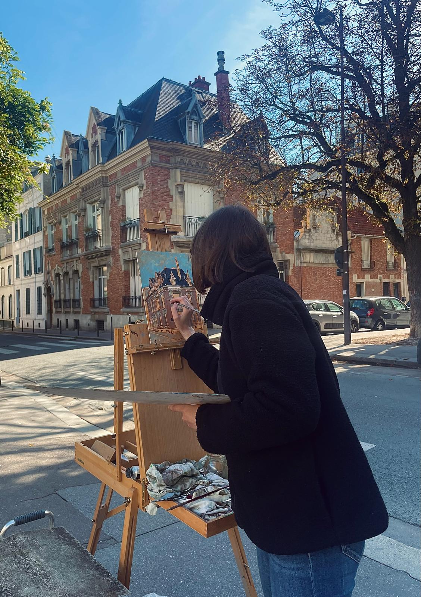

El proceso pictórico comienza al aire libre (plein air). Plantar el caballete portátil frente al paisaje, capturar la luz fugaz del momento y trasladar esa primera impresión al óleo, continuando después el trabajo en la calma del estudio.

Trabajo en marcha
Buscando la luz y las tonalidades al óleo.